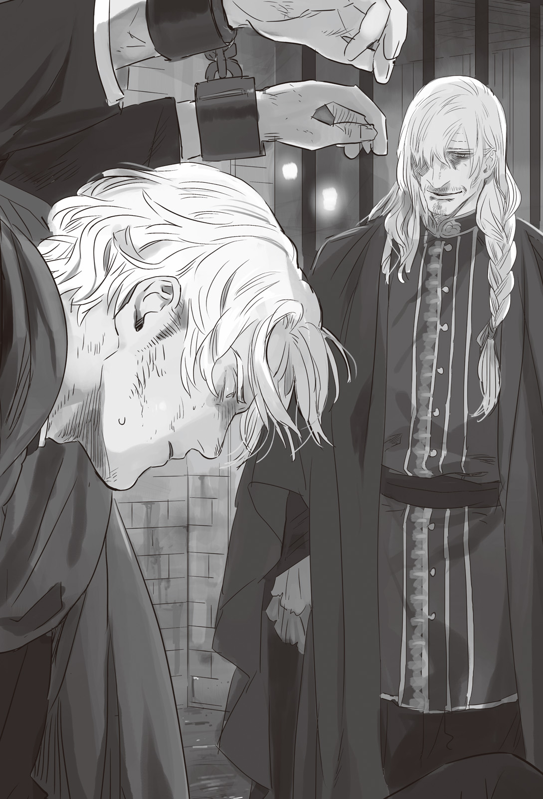

Chapter 2 – Whirlpool of Schemes
.
Part 1
The dukedom noble Viscount Continerri’s territory was located one day worth of travel away from Mulberry. It was practically the war frontline. His face twisted as though he had bitten a sour grape when he heard the report about the dukedom army’s complete defeat.
It was such a large army. In addition it seemed there were also secret agents of Europa Religion participating in the battle. And yet they still tasted defeat to such degree.
──Perhaps the dukedom had weakened even more than he thought.
He didn’t know about other nobles, but in case the kingdom army sallied out from Mulberry, his territory was a strategic location that would become the very first place to be targeted.
If he couldn’t expect any reinforcement from the dukedom, Continerri territory would be trounced by the kingdom army in the near future. When his castle was brought down, Continerri’s head would be exposed at the castle gate for all to see.
Continerri shivered.
Although he was a noble who swore loyalty to the dukedom, he never considered his loyalty as something that he would maintain even if it brought him destruction.
「Really, even that so called secret force of the pope can only talk big!」
If only they could at least kill Baldr, he wouldn’t need to feel lost like this.
Continerri clenched his right hand so hard it even turned white. A secret message had reached him just the other day.
It was a message from a refugee noble who was working hard to divide the dukedom nobles after Silk was pressuring them.
This wasn’t the first time this kind of secret message reached him. He simply ignored those messages until now.
──However the situation had changed.
Continerri was starting to think that he could use this as justification to switch side to Baldr right now.
「I also heard that the reinforcement from Answerer Kingdom has arrived but……」
The number of soldier that Answerer Kingdom could field was number one in the continent. No other country could match it.
Continerri was dissatisfied that the number of the reinforcement was only 20000.
He couldn’t help but doubt whether Answerer Kingdom seriously wanted the dukedom to win. After all Answerer Kingdom had the national power that could easily send 50000 or 100000 soldiers to expedition to another nation if they felt like it.
And yet why did they only send 20000? Would they be able to win with just that many soldiers?
Continerri too wanted the dukedom to win if possible.
After all it was hard to think that the nobles would be treated as well as now if Baldr who was supported by the maritime guild took over.
He wanted to live in the dukedom where the superiority of the nobles was fundamentally established. But, staying in the losing side and getting killed was the only thing that he refused to accept.
「Now then, what to do now?」
There was an information that suddenly came to Continerri at this timing.
Baldr and Mikhail got into a duel that ended up in a draw──it was a story that he found hard to believe at first, but Continerri was instinctually convinced that this information was true.
It might be fake information if it said that Baldr won, but there was no reason for Baldr’s side to advertise a duel that ended up in a draw.
That also meant that the 20000 reinforcement that Mikhail was leading only had that number 20000 and nothing more.
Mikhail had a legendary close quarter combat ability. But even someone like him couldn’t defeat Baldr. In that case the battle would be decided simply by the number of troops.
「As I thought, I should take measures. Fortunately I have a present.」
Continerri had a trump card that other nobles didn’t have.
It was none other than the information that the pope was targeting Baldr.
The information that a religious organization like Europa Church was sending assassin was really significant.
「Even so, there might not be any need for me to switch side right away. With this information it might also be possible for me to ask them to remove my territory from being targeted.」
「──Sleep talk when you are sleeping.」
「Who?」
Continerri couldn’t even turn around before a blade with dull glint was pushed out of his chest with a blood splash.
The intelligence agent of Europa Church’s special corrective force Martell had infiltrated inside from somewhere and stabbed Continerri’s heart with his short sword.
It was a perfect assassination where his presence and killing intent weren’t detected.
「Hmph, do you think that we would left a man who can’t be trusted like you alone?」
They couldn’t possibly allow anyone to know about the mission that the church carried out in darkness.
Regardless whether the mission succeeded or failed, he had planned to kill Continerri from the start because of his needless prying.
Martell laid down Continerri who had turned into an unspeaking corpse and muttered in disgust.
「Unfortunately we can’t kill Valerie. So you should at least make yourself useful in your death as a warning to him.」
.
Part 2
Viscount Continerri died an unnatural death. That information brought a shock among the kingdom and dukedom that were in deadlock.
The dukedom that was utterly beaten in the campaign where they staked their dignity, and the kingdom that was pressed to reorganize due to Piaggio’s assassination.
For Baldr and others in the kingdom’s army who were in high spirit right now after their reinforcement arrived, the fact that this incident happened while the small feudal lords were still continuing to side with the dukedom was significant.
In the end, why did the viscount die? If he was killed, then who in the world did it?
The side that made the first move was as expected the dukedom that was in their element.
The dukedom government announced that Viscount Continerri tried to switch side to the kingdom side, at the same time they appointed Baron Pierro whose territory was adjacent to Viscount Continerri to be the new feudal lord of the viscount territory.
Continerri territory was immediately occupied by the force of Baron Pierro and dukedom army. Viscount Continerri’s family was captured and sent to the capital Millianna.
.
「Watch the fate of the traitors!」
The family of Continerri was beheaded one after another at the scaffold that was set up in the middle of a plaza when they arrived at the capital.
Although it was a scene that often happened at the time when the kingdom was destroyed, there were a lot of commoners who rejoiced in watching this kind of brutal spectacle. The plaza was immediately filled with throngs of people.
However there were also many people who were unable to watch calmly.
As everyone knew, it was the nobles who also received invitation to switch side just like Continerri.
(That might be me tomorrow.)
(Even so, just how did the dukedom find out?)
It wasn’t like Continerri had openly betrayed the dukedom.
He didn’t gather soldier, or handed over his territory to the kingdom.
There was only information that a letter that promised to collude with the kingdom had been found as the proof.
The feared the intelligence agency of the dukedom that obtained that information.
「However things went well for Baron Pierro.」
「He obtained half of Viscount Continerri’s territory and it seems his rank will also be raised.」
「Even though no one will do something foolish like this if it’s clear that the dukedom will be the winner.」
「It will be better for you to not say anything careless. In a sense this is a good chance to obtain accomplishment you know?」
The nobles were watching the execution from afar with pale face. Jack sported a dark smile gloomily seeing that.
「Let me see, just how many among those people will betray me.」
「──It will be better to not say something unlucky like that.」
It was Valerie who replied to Jack brazenly without any reservation.
The intelligence agency of this country was an organization that Valerie rebuilt from scratch. The organization was still under Valerie’s strong influence even now when he had retired as its director.
Anyone who in the know would say that Valerie was the ruler of the dukedom’s darkness. Even now his power was still unshakeable.
「This case become a good chance to make an example. They too won’t betray the kingdom as long as the dukedom isn’t defeated once more in the battlefield.」
「──That’s what he said. Do you hear that, Olten?」
「I will take those words to heart. I swear I will present a victory for the dukedom.」
After Cesare died, Olten officially returned to the post of great general. He was standing at attention at the right side behind Jack and lightly bowed his head.
(I won’t let you do as you please in this country, Ramillies!)
Now that he had completely took control of the dukedom army, he was able to place capable talent in high positions and increased the battle strength of the dukedom army.
It was a result that more than made up the previous defeat.
Even so Olten was considering that it would be a herculean task to oppose the kingdom under Baldr’s leadership head on.
If he was going to fight then he had to win no matter what. For that, it wasn’t enough with just Olten’s skill, Mikhail’s cooperation was also indispensable.
The advantage for the dukedom was that they just needed to kill Baldr alone and everything would be over.
When speaking of the one with the highest possibility to take down Baldr in the battlefield, there could be nobody else except Mikhail.
The problem was the beastman race’s volunteer army that came from Nordland Empire.
From Olten’s assessment, only Baldr and Ramillies were able to lead a big army as a general at the enemy’s side. Silk and the other commanders there were completely not their match.
However Gitze was a veteran general who had continued fighting against Gartlake Kingdom until now. He was an opponent that he absolutely had to be vigilant against.
Even if it was impossible for Gitze to lead a human army, having a general who was thoroughly knowledgeable with the knack of controlling an army and not having one had a world of difference.
Mikhail against Baldr, Olten against Ramillies……then, who among his subordinates would be able to face Gitze?
Olten was unable to measure Gitze’s strength accurately.
「First we better reinforce Baron Pierro. There is no guarantee that the kingdom won’t take advantage of the chaos.
Olten nodded with a conflicted expression at Valerie’s warning.
「I already sent three thousand of my subordinates to solidify the defense there. There are also twenty thousand troops at the rear, ready for battle anytime.」
「As expected from your excellency, perhaps I have spoken needlessly.」
「No, I’m thankful for your warning.」
Although both of them belonged to the same camp, Valerie was someone who he couldn’t let his guard down to. Olten lightly bowed his head at Valerie.
Other than the fools, there were only the archduke and Olten in this dukedom who didn’t feel timid toward Valerie at all.
Valerie was someone useful for the dukedom, but he was wrapped in too much darkness. Olten perceived Valerie as someone who would swallow him into darkness if he carelessly approached him.
As expected even for Olten, Valerie’s ambition to renew Trystovy that had started even before the destruction of the kingdom was something that was completely beyond his imagination.
「I shall write the list of the nobles who the kingdom is reaching out to and hand it to the great general later.」
「I’m grateful for your assistance.」
It was a silver lining that with what happened to Viscount Continerri, it became easier to obtain the cooperation of the nobles.
It also really helped how Baron Pierro was immediately rewarded lavishly.
For now they had been given time to think up a method to win the war with certainty.
.
Part 3
Valerie was laughing loudly inside his heart at the execution when the sun had set and he returned to his mansion.
Looking only at the exterior, it was a small and plain mansion. No one would possibly imagine that this was the residence of the person who controlled Trystovy Dukedom’s darkness.
However the inside was no different than a fortress.
The basement boasted a size that was five times bigger than the mansion at the surface. Soldiers were patrolling inside the ground with strict security.
Furthermore trained military dogs were using their excellent sense of smell to guard against anyone suspicious.
Even if the whole dukedom was searched, there would be no other residence with stricter security than this Count Ost’s residence.
「──Welcome back, my lord.」
「I have kept you waiting Caolila. Has anything significant happened?」
「Yes at the moment. It seems that the execution was really effective.」
The old butler who was called Caolila lifted the corner of his lips wickedly with his lips twitching as though he was laughing.
This man was ten years younger than Valerie, but he had reached his seventy. This man was actually the leader of the intelligence agency that was Ost House’s pride.
He was an extraordinary expert who had the most complete knowledge in this Trystovy Dukedom. He was the confidant among confidants for Valerie.
Such person had come to welcome Valerie personally. There was no way nothing had happened.
He intentionally didn’t specify further about it. It must be because the matter was something that couldn’t be said or because there was no need for it.
Valerie handed his coat to Caolila with a practiced movement. He had quickly guessed the reason why Caolila was here.
「I’m sorry to disturb you when you have just returned home, but can I ask for a little bit of your time, father?」
The current head of Ost House, Batista was Valerie’s son who was the most similar with him if only his appearance was taken into consideration. His fingers were playing with his blonde hair that he inherited from his father.
Of course Valerie knew very well that this was the habit of his son when he was in a bad mood.
「I won’t say that I don’t have time, but isn’t there something else that you should say?」
Valerie casually talked with a wry smile, but that didn’t reach his eyes.
He was the shadow ruler of Trystovy. He was someone cold who wouldn’t be shaken at the slightest even if his son died right before his eyes. Batista was suddenly panicking when Valerie’s cold gaze caught him.
「M-my apologies. You must be tired after accompanying his majesty the archduke. I’m glad to see that father is in good health.」
Batista bowed with his back drenched with cold sweat.
He couldn’t oppose his father no matter what when his father’s powerful cold gaze was turned toward him.
Even though he had turned twenty and inherited the seat of Ost House’s house head, the pecking order between his father and him hadn’t changed at the slightest.
That could be seen even now from how Archduke Jack didn’t allow Valerie to hand over his title to his son. That matter was something that greatly frustrated Batista.
Batista didn’t know about the fact that his father Valerie was in control of the intelligence agency that ruled the dukedom from behind the scene.
From that it could be seen what position Batista occupied within Valerie’s heart. He was only an existence that was the house head of Ost House in name only. He was there just so Valerie could push off all the miscellaneous tasks to him.
But Batista believed that the reason he was entrusted with the count house was because of the blood flowing inside his body as the eldest son and his ability. He held no doubt about it.
His sense of inferiority toward his father and his dissatisfaction from receiving unfair treatment had been continuing to grow violent to a degree that made him forgot his fear toward his father for all these many years.
The impetus that made his dissatisfaction exploded was the information that entered Batista’s ear at the afternoon today.
「……I heard a story about how father is keeping a woman in the secondary residence.」
「You mean Kiana’s residence. What about it? That residence’s ownership should be still in my name.」
「There won’t be any problem if that’s all. But I can’t ignore it at all if that woman is a beastman.」
Trystovy wasn’t a land that was kind to beastman since a long time ago.
It was even more so since the coup d’etat happened and the country’s connection with Answerer Kingdom deepened.
The scandal coming out from this prestigious Ost House had to be prevented by all possible means.
Batista wondered how in the world someone like his father could commit such carelessness. He was suspecting that perhaps his father had finally began to turn senile.
「What a deplorable thing. Who might be the one who brought this information to your attention?」
「Don’t play stupid and dodge the question.」
Batista had no intention at all to allow his father to gloss over this matter with such jest. If things go well this could also be his chance to snatch away the real authority from Valerie.
He absolutely wouldn’t let Valerie left things unsettled. Batista stood on Valerie’s way and hounded him tenaciously.
「……Even though I have personally given the order to entertain that woman, there is a fool who needlessly blabbered. That fool has to be sentenced to death.」
「──Just now, what did you say?」
If Batista didn’t mishear, Valerie had just given the order to kill?
Who? Could it be an order to kill the beastman in question?
「I said that I’m going to kill the fool who talked to you, Batista. It’s my blunder that there is still a fool in this Ost House who would needlessly report to you.」
「P-p-please wait. There is no way such atrocious deed can be allowed! In the first place it is father who is doing a misdeed by keeping a beastwoman secretly!」
Valerie wasn’t looking at Batista anymore.
「Caolila, search for those who had gone to Kiana’s residence and kill them. I don’t care how many people there are. If they resist then kill them all even if they are children or old man.」
「──By your will.」
「Wha-! Stop! Caolila, I order you to stop!」
「There is no need to worry. I won’t commit a blunder that will leave a proof behind. Besides I also won’t use any people of Ost House at all for this.」
Caolila smiled derisively with a fake courtesy before he bowed to Valerie.
「Then, I shall give my report tomorrow morning.」
「I told you to stop!」
Batista’s facial expression turned furious and he yelled angrily. His cheeks were convulsing and his body was trembling with a fear that he couldn’t comprehend.
「My master is Valerie-sama alone. I don’t remember every serving Batista-sama. Please don’t forget that there are also many people in this residence who are just like me.」
Batista lost the strength in his hips and fell down on the spot after being implicitly told that even though he was the house head on the surface, it was just for form’s sake.
Anything and everything had been leaked out. Most likely Caolila had already known about everything since the beginning, no doubt about it.
Far from growing senile, Valerie had become even crueler than before. Batista clung on him without care about his appearance.
「F-f-forgive me! Please forgive me father.」
It was just like when he was still a child. Batista had no other option than doing this.
Valerie approached the groveling Batista and gently hugged his shoulders with a wide smiled that contained not a single trace of malice.
「Let me repeat the words that I told you the day I handed the seat of house head to you once more. I don’t mind if you use this Ost House freely. I won’t say any complain no matter what kind of way of life that you choose. Just don’t get in my way. Do you understand?」
「Yh-yheess!」
「Good good, I too don’t want to kill children, much less my own child.」
Even so if it was necessary, then Valerie would kill Batista without any hesitation.
Batista came into contact with his father’s madness once more and sincerely regretted from harboring an excessive ambition.
His father wasn’t a decent human. He was the demon king.
Even if there was something that he sincerely loved, he could trample what he loved while laughing. No, he was worse than that, he was a madman who would offer even what he loved as a sacrifice ecstatically.
If Batista wanted to live as long as possible, then he mustn’t oppose him no matter what.
That night, there were six servants in Ost House’s mansion who died from heart failure, but no one tried to question the matter.
.
Valerie opened a hidden door that was only known to Caolila other than him.
Behind it there was a stair that was dug deeply independent from the other underground passages. At the end of it was an underground prison that was strongly locked with thick wall and magic seal.
「──How are you doing right now, Martell-dono?」

Martell was chained inside the dark underground prison. When he heard the voice of the familiar old man, he finally understood what happened to him and laughed weakly.
──It seemed he was already set up into a trap since the early stage.
He had the memory of killing Continerri and getting out of the mansion. But then he suddenly felt dizzy and fell unconscious……was it drug, or perhaps magic?
He was already inside this underground prison when he opened his eyes.
A man as skilled as Martell was done in without even noticing it and carried here.
He couldn’t recall ever making a blunder this big even when he was still a candidate in training. Just what kind of expert Valerie had working for him?
The church must be in uproar around this time from his disappearance.
Humiliation was burning his whole body, but Martell didn’t show it at all on his expression and turned to face Valerie with a question.
「What is the meaning of this? Is the dukedom planning to turn the church into enemy?」
Martell bluffed for all he was worth. But as he expected, he was unable to agitate Valerie at all.
Martell’s hands were suspended from the ceiling. He wanted to click his tongue seeing that his provocation didn’t have any effect at all.
Valerie didn’t even pay any mind to the conflict that Martell was feeling and smiled warmly.
「What are you saying? You are the one who killed a noble of our country. I’m not going to allow you to pretend to be ignorant at this point you know?」
「Hmph, I dealt with a fool who was going to betray the dukedom. You should thank me instead at the very least.」
「If only your side consulted with us beforehand, then we too wouldn’t need to be rough like this.」
Valerie chuckled with good grace.
A bishop of the church assassinated a high ranked noble of the dukedom. If this matter was brought to light, even Europa Church wouldn’t get away unscathed.
In several more days, the church might move to delete all the past records that recorded the existence of the man called Martell. No, perhaps it was already happening right now.
Buying time until that process was completed was also within the duty of him who was making this blunder. Martell easily accepted that.
Even with that the church wouldn’t be able to avoid damage, but it was better than not doing anything.
「If that’s what you are really thinking then you should let me go.」
「Unfortunately in my position I too can’t possibly allow a foreigner to get away with a crime of assassination just because the victim is a criminal.」
「If you have the free time for this kind of thing, shouldn’t you prioritize doing something about that Baldr Antrim Cornelius instead?」
「Of course. I’m having you come over like this is also because I want to do something about that matter.」
Valerie made a smile of madness that looked like it didn’t belong to this world. Martell’s back shivered with a chill the instant he saw that smile.
This man was dangerous. Baldr Antrim Cornelius was a dangerous man to have as an enemy, but Count Valerie Ost’s existence itself was a dangerous poison.
He mustn’t allow himself to be dragged by that madness. Martell’s instinct was telling him that.
「──Why is the church considering him an enemy I wonder?」
「The answer is obvious. The throne of a royal family with such prestigious pedigree must never be allowed to fall into the hand of beastman.」
「Of course there is that. However that’s not all there is to the church’s true motive isn’t it?」
There was a reason why the special corrective force that Martell belonged to even brought out the holy relic to deal with Baldr. Martell groaned when he noticed that the madman before his eyes was pointing that out.
He couldn’t admit it, but he couldn’t help but feel curious of just how much Valerie knew.
「A king of beastman cannot possibly be allowed to exist. That is the church’s will, nothing more and nothing less.」
「──Is that so? So you are saying, that the existence of King’s Gate that appear for the first time since the beast king is really not significant at all?」
Martell reflexively glared at Valerie and gulped.
He immediately realized his blunder, but in the first place this was a shock that he couldn’t possibly hide in the first place.
「How did you……」
Perhaps he should stay quiet in order to keep the secrecy.
However for Martell right now, the bigger problem was how Valerie learned about the existence of the King’s Gate.
Even in the church, only a very limited amount of people knew about the King’s Gate. It was a secret among secrets.
Even though Valerie was the shadow ruler of Trystovy, this matter was something that far surpassed the level of what he could learn.
「Actually this isn’t the first time that beastman blood got mixed into a royal family. Though this is something that must never be allowed to get out.」
Valerie spoke carelessly.
However the fact that he spoke was shocking. Valerie was saying that even before Baldr’s entrance, the royal family of Trystovy was already polluted with beastman blood.
「Is it alright for you to tell me something like that?」
「It’ll be easier to negotiate if both sides shared secret with each other.」
「──Negotiation?」
Martell glared at Valerie with suspicion.
He was forcibly kidnapped and imprisoned. There could be no negotiation at this point. That was what Martell thought.
「Then are you saying it’s alright for the church and the dukedom to stay in hostility with each other like this? Do you think that it won’t be a problem even if it come to light that the church has assassinated a dukedom noble and get kicked out of this Trystovy?」
Your threat is useless. Martell was unable to spurn Valerie with such words.
For the church, eliminating Baldr and the King’s Gate’s lineage was their supreme mission. It was inconceivable for them to intentionally increase the number of their enemies while being faced with such problem.
Furthermore this case wouldn’t just stop in Trystovy. The church’s reputation in the surrounding countries would also drop without a doubt.
There shouldn’t be any proof for the assassination other than Martell’s existence, but if it was Valerie, it was possible that he had prepared some kind of way. Martell had to consider that possibility.
If by any chance the personnel of the church got evicted out of the country because of this case, then they church might really become unable to do anything except watching the birth of a new beast king. Martell couldn’t imagine the pope allowing such thing to happen.
「……I can’t make a decision for something like this.」
「Of course, I don’t expect such thing from you. But, I am predicting that my cooperation will be necessary for the church.」
「What are you saying after capturing me and hindering the church’s mission?」
「I have already informed the pope’s office about your capture. Now I only need you to return back and inform them about the situation accurately. Although I look like this, I’m also a pious believer of Europa you know?」
This was the first time Martell heard a lie this barefaced.
Even if heaven and earth were overturned, it was impossible that Valerie was someone who believed in god.
This was a man who lived with his whole body submerged in curse and grudge. There was no doubt that the person himself didn’t wish for tranquility in his heart from holding faith to god.
「I think that even god has the right to choose his believer though.」
「What, it’s insolence for a human to presume to know about what is going on in god’s heart. Only by believing that human can be delivered salvation from this earthly life. Isn’t it like that?」
This was Valerie’s honest thought.
There were things that could only be saved by believing. That was exactly why Valerie was trying to destroy negative legacy that was nesting in Trystovy.
「Certainly, the will of god isn’t something that we human can measure.」
Even so Martell couldn’t believe at the slightest that the grace of Europa could be manifested through Valerie.
「The only thing that I can do is to make a honest report to my superior. Is that alright with you?」
Valerie agreed with a complacent smile that contained not a speck of malice in it.
「The dukedom won’t have any chance of victory unless the King’s Gate is sealed. I know that your group managed to seal the King’s Gate using some kind of method. I won’t ask you to tell me what this method is. But I wish that we can work together with each other when it’s time to use it.」
If they shared the information accurately with the dukedom army, the future where Baldr was defeated in the battle the other day would also be possible.
Martell couldn’t help but shudder at Valerie’s terrifying ability of discernment.
Even though it was already shocking that Valerie knew about King’s Gate, he also knew about the holy relic to some degree.
(Won’t it be better if kill him here?)
Martell almost decided to use his last resort of killing the nearby enemy at the cost of his own life.
(No, this man is dangerous, but he is necessary in order to kill that beastman wannabe.)
It would be extremely difficult to kill Baldr in combat even with the strength of the church’s special corrective force.
The church certainly wanted to work together with the dukedom. It was fine even if it was only indirectly. Unfortunately the church didn’t have the military strength to invade Trystovy.
The possibility of his superiors accepting Valerie’s suggestion was high with such realistic circumstances behind it.
「Then can you release me from this chain already? I’m also hungry so I’ll be very thankful if you give me a warm soup.」
「I shall prepare our best dishes that is good for sick person to get back on their feet quickly.」
.
──The first preparation was going well.
If he directly suggested a negotiation to the church, Valerie knew that they would just evade the topic.
He had to capture Martell and made the church’s shadowy force to grasp his side’s capability to a certain degree. Without doing that, the church wouldn’t sit on the negotiation table.
Valerie understood well that Baldr’s complete victory had brought an impact to the church.
Now was the only time to join hand with them.
He would make the church and also Answerer Kingdom to be gone.
Valerie didn’t have any intention to allow the church to continue their secret maneuvering behind the scene forever.
He would drag them out under the light and into destruction together with the dukedom. He would have all the factors that could harm the future of the new Trystovy to vanish.
To do that──Valerie hardened his resolve to seriously fight Baldr.
He wouldn’t be able to obtain the church’s trust unless he did that.
「How incorrigible. However I won’t be able to defeat Baldr even if I use everything in my disposal. Besides even more blood should flow in this country.」
He would be troubled instead if the dukedom was easily destroyed and peace quickly arrived.
Trystovy should be made to bleed and exhausted even more so that nobody would wish for a muddy civil war to occur anymore, that nobody would even have the leeway to feel dissatisfied for having a king who descended from beastman.
「My friend. You surely won’t forgive me who has fallen this low.」
He betrayed his friend’s wish for him to be happy.
Exactly because of that, he had to complete his revenge that he put his whole life into no matter what.
.
Part 4
Martell was captured as a perpetrator of assassination.
The pope office was driven into chaos when that report reached them.
There was no record of a member of the special corrective force ever getting captured alive even within the long history of the church.
They either completed their mission or died. If they failed their mission, it was only natural for them to quickly take their own life.
To be captured alive meant that he wasn’t even given a moment of opening to commit suicide.
If Martell’s skill was taken into consideration, it was impossible for this to happen unless the other side had been waiting for him in ambush with full preparation from the start.
「Why did Martell assassinate Viscount Continerri?」
Those who knew about the dark side of the church had to be erased. Especially the incompetent people who didn’t understand about consequence and loss and gain, such people had to be swiftly erased.
In that respect, Valerie wasn’t an existence who could be easily assassinated, so the special corrective force thought to assassinate Continerri to be a warning for Valerie too.
But they never expected even in their wildest dream that Valerie was a step ahead of them and laid out a trap.
Could it be that Valerie was already aware of the special corrective force that was the church’s secret by the time he came into contact with Martell?
「……The opponent is a sly old fox of the underworld. There is no way he will openly declare a war to us.」
「Is it already too late to kill Martell now? The only thing that he can use as proof is only Martell alone.」
An archbishop was asking for the death of a subordinate without any hesitation. From there it could be peeked just how cheap the life of the special corrective force was.
However there was a practical problem for that. The other side had someone who could capture Martell alive. The risk would be too big to send another assassin to kill Martell. If the assassin they sent also got captured too, the church wouldn’t be able to make excuse anymore.
「It’s not desirable for us to be in open hostility with the dukedom right now.」
「Although it was to keep the secrecy, wasn’t assassinating Viscount Continerri overdoing it?」
「No, the assassination itself isn’t a mistake. The problem is that our agent got captured.」
The special corrective force could be called a secret agency even though there were rumors about it was because nobody could catch hold of their true form. The moment the name of the special corrective force got exposed under the sunlight, its worth as an organization would be over.
What should they do in order to resolve this problem while still keeping the existence of the special corrective force as a secret?
「──We can only deny about Martell’s existence while finding a common ground with the dukedom. We will only give advantage to that monster if we turn the dukedom into our enemy.」
Those words came from Magella, the archbishop in charge of the church’s diplomacy. The pope nodded gravely to that and their policy was decided.
Each of them started taking action to erase the traces of the man called Martell from this world while they would also attempt to win over the dukedom by giving them concessions.
Even though the church’s territory was like a tiny country that could be blown away by a single breath from a major country, the influence they possessed in this continent was still vast regardless whether it was on the surface or behind the scene.
They wouldn’t be able to introduce themselves as the biggest religious nation in the continent if they couldn’t overcome a danger of this level.
It was exactly at that timing.
「There is a messenger from Count Ost of Trystovy Dukedom!」
The message that was conveyed by the visiting messenger was something that surpassed the church’s imagination.
Martell would be liberated. The message also said that the dukedom was aware of the existence of King’s Gate and they sought the church’s assistance to deal with it. The detail could be asked from Martell’s own mouth──.
Why was Martell liberated even though they were able to capture him red handed?
In the first place, could the church believe Martell who was liberated by the enemy?
The top brass of the church were bewildered by the situation that took place unexpectedly. Not a single one of them was able to see through Valerie’s motive.
「You have done well to convey this message. Please be sure to tell Count Ost that we will definitely consider his proposal carefully.」
The archbishop observed the complexion of the pope while barely forcing himself to say those words to the messenger.
In any case the church couldn’t possibly have a breakdown of relationship with the dukedom here. At the very least they had to keep it like that until Baldr’s ambition was stopped.
First they had to delay questioning this problem and also gave the other party a good impression in order to build a good working relationship from here on.
However three days later, the church was shaken severely once more by the words that were spoken from Martell’s mouth who returned back without a single wound on his body.
.
Inside the great statue of Europa there was a dark room that only the pope was allowed to enter.
That place was storing a relic where history and wisdom of the church that couldn’t possibly be publicized was written on it.
Only the pope alone knew about the content.
If other people tried to operate this relic, the burden of the relic would burn off their cranial nerves and they would die instantly.
He tried to remember when was the first time he entered such a forbidden place.
The pope closed his eyes and went back his memory lane.
The previous pope named him as his successor and then it was approved in the round-table conference. If he didn’t remember it wrong, it happened 51 years ago.
──Until that time he was only focused in the race to be promoted within the church.
Although he was born as the second son of a poor baker, he became popular in his neighborhood due to his keen mind, and with that he was fortunately able to obtain priesthood as a friar in the church.
He didn’t want to return to that poor livelihood anymore. He sincerely refused to return to an environment where he often went hungry and if he got seriously sick there would be nothing he could do except giving up and waiting for death.
He distinguished himself within the church as though to repay for all of his misfortunes since birth.
He tripped up his colleagues and seniors and swore that it would be him and nobody else who would obtain the supreme position within Europa religion. He never said out loud such ambition that originally shouldn’t be allowed for someone of his occupation, however that was what he decided in his heart.
Fortunately there was a tradition in Europa Church to not be fixated with social status from birth.
After that he became a demon of political struggle and did things like bribery or giving lavish treatment as though it was only natural.
He even joined hand with scoundrels who specialized with work in the shadow to take down his rival.
Even while he displayed degenerate actions that would make other questioned which part of him was a clergyman, his dearest wish finally came true and he succeeded in obtaining the position of pope. But that result wasn’t necessarily the fruit of his schemes.
.
「──What is necessary to be a pope isn’t human virtue.」
His predecessor asserted that to him clearly.
He thought that such thing was a problem in itself, but he didn’t say it out loud.
「The real authority for managing church is in the possession of the archbishops in the round-table conference. You too surely know about that.」
「Of course, I’m aware that the authority of your eminence the pope is also presiding over the archbishops even in such case.」
His predecessor snorted. That was because he was aware that he who was an archbishop at that time didn’t actually hold any such respect at the slightest toward the pope.
「What is demanded from a pope is to keep the secret of the church’s darkness no matter what kind of method he has to use and to prepare for the coming crisis.」
「──The coming crisis?」
There wasn’t an ideology about the end of the world in the teaching of Europa religion.
Although even if there was such ideology, there was no way he would believe such empty story.
「The true objective of our Europa religion isn’t to give salvation to all living things under the name of Europa. It’s to protect this world from invasion.」
「Haa?」
He let out a stupid sounding voice.
Certainly mediating between countries to prevent wars from happening was a praiseworthy role of the church. However he could only feel puzzled if he was told that was the true objective of the church.
At that time he wondered whether his predecessor had started to turn senile and delusional.
「It can’t be helped that you can’t believe it. But that will only be until you ascertain it with your own eyes.」
His predecessor laughed cynically.
「──Watch. The truth of the church lie here.」
Light was overflowing bit by bit. The laughter of his predecessor was getting louder along with that.
He grimaced slightly from the irritating voice that touched his nerves.
「You sir won’t be able to escape anymore after learning the truth. Only those who can bear the weight of this truth can become the pope.」
.
The pope cut off his recollection and let out a deep sigh.
The seal was undone in his era of all time.
How troublesome, he didn’t become a pope for something like this. Even though his only wish should be to obtain a peace that nobody could violate…..
── If I make a mistake in my leadership, the church will lose its meaning of existence and the world will follow the path of destruction.
「……I don’t know how much he know but, Count Valerie Ost, he can’t be allowed to live.」
If Valerie arrived at the unvarnished truth, he would have to be killed first before Baldr.
But, as expected the pope couldn’t imagine that Valerie could possibly know of the truth. It was impossible for anybody than the pope to know about this secret.
If it was only about the existence of King’s Gate then all the top brass of the church were in the know.
「Perhaps……no, there is no way.」
He didn’t want to consider that the information leaked out from the church, but if that wasn’t the case that meant Valerie gathered information from the beastman race.
「First we will have to kill Baldr Antrim Cornelius before thinking about this.」
If they could just kill that man, the church wouldn’t need to have a second thought about killing Valerie or turning the dukedom into enemy.
Besides the dukedom too wouldn’t be that obsessed with making trouble with the church that they would even turn Answerer Kingdom into their enemy.
「Things just won’t go as they should.」
.
Part 5
「I shall act as liaison between your excellency and the church from now on. Please treat me as you see fit.」
Martell bowed deeply toward Valerie wearing the ceremonial dress of a bishop.
「My goodness, looks like you have drawn the short end of the sticks.」
Surprisingly it was Martell who was chosen to act as the church’s liaison for their cooperation with the dukedom.
Martell was aware that this wasn’t a promotion or the like at all for him.
He was given the mission to betray Valerie when the times came and then killed himself on the spot regardless whether he succeeded or failed.
The failure that Martell committed was just that big. It wouldn’t be that strange for him to be executed immediately after he returned at that time.
「I’m envious.」
「Envious?」
Valerie shook his head as though he was speaking from the bottom of his heart. Martell naturally asked him.
「The church appointed you sir to become a liaison because they don’t have any doubt at all that you have turned traitor toward the church. I only have several subordinates who I can trust to such degree.」
Martel had certainly committed a blunder.
However the church didn’t hold any suspicion at all that Martell might have betrayed the church and switched side to Valerie. The faith of those who belonged to the special corrective force wasn’t that weak.
There was no doubt that only the church or the beastman race was able to believe in the loyalty of their members like this throughout the continent.
(How truly envious. Though it’s a different matter between not turning traitor and not causing loss. Are they intending to send poison to this me using this man?)
Sometimes it was none other than virtue that ended up inviting destruction in the nastiest way.
It was exactly because Martell was a capable and perfectly faithful man that he had extremely great utility value for Valerie.
.
Part 6
The commanding officer of Trystovy Dukedom’s first fleet Federigo Romano was leading Gigante and continued to seal ocean current Medina even now.
It was one of the three great currents that made Mulberry as thriving as it was. Just because the other two currents had been taken back wasn’t any reason to abandon this current.
It was a headache for the maritime guild that this area that was one of the major sea routes continued to be blockaded. Just because two of the three had become usable didn’t solve all the problems.
On the other hand the dukedom side also received great impact because the sea routes blockade that should corner Mulberry in a short time was broken through. It was said that the navy minister Tommaso had submitted his resignation to the archduke unofficially.
He heard that the archduke delayed from making a decision, but Federigo wondered how would it be in the end.
「Well, no one ever imagined that this Gigante would be done in that easily.」
Gigante was a fortress that was floating on sea.
This ship wasn’t amusing for sailors, but this ship was created so the conventional way of fighting until now by shooting arrows at each other and boarding the enemy ship for close quarter combat became impossible.
The difference of height between the deck of Gigante and other ship was too great that a proper close range combat couldn’t occur.
If Federigo was told to fight Gigante, he would recruit suicide corps and set his ship on fire to crash into Gigante. That was the only idea that he could think of.
It was a method that was no different than a declaration of defeat as a sailor who had confidence in his own ability until now.
The kingdom army conquered that Gigante──or rather it was trounced by some absurd heroic women with brute force──at first Federigo couldn’t believe that story.
It would be more believable to hear that Gigante was sunk, but a ship being taken over was a disgraceful story for the crews, and no matter how hard he racked his brain he couldn’t think of any method to take over Gigante.
When he learned that the story was really true, he was honestly at his wits’ end.
He didn’t know how should he fight an opponent that was able to occupy Gigante with close-quarter combat.
The only idea he could think was to not allow the enemy got near from the start and to increase his side’s firepower.
If possible he wanted to double the size of his fleet, but the declining dukedom didn’t have any leeway for that.
And yet he also didn’t have the option of not strengthening his combat force.
With a Gigante falling into the kingdom’s hand, the armada of maritime guild that was commanded by Admiral Barbarino became completely free to act.
It was earnest desire as a military man to settle his rivalry with his old enemy, but he couldn’t possibly let his guard down against Urraca de Parma, the navy minister of Majorca who was even extolled as the personification of the sea god.
Or rather presently Federigo was forced to prioritize preserving his fleet that he was unable to deal with Urraca who was rampaging across Marmara Sea.
「Good grief, so this is what Trystovy navy that was once said to be the ruler of the south seas is now reduced into.」
It was useless to reminisce about it now, but in the past both the maritime guild and Sanapniradeon were under the control of Trystovy and it was said that one day the country would surpass Answerer Kingdom as the continent’s strongest.
When he was still nothing more than an officer, Federigo was burning with ambition and dream.
He swore he would become an admiral and sailed fast through this south seas under the title of the strongest. And then he would perform conspicuous service that left his name in history.
Unfortunately his dream didn’t come true except for being an admiral.
「Well, nothing will start if I just grumble here.」
Federigo scratched his head awkwardly. Then there was a report from the sailor on guard duty that there was enemy ship sighted.
「──So they came.」
Even Federigo could see that a fleet of around thirty ships was approaching here from the west.
「They arrive exactly as scheduled. The skill of those overserious fellows from Answerer isn’t bad.」
His tone was casual but Federigo’s expression couldn’t hide his humiliation. After all the glorious navy of Trystovy Dukedom had lost a Gigante and they couldn’t deny that they were unable to maintain the control of the sea with their own strength.
After Trystovy Dukedom negligently lost Gigante that Answerer Kingdom generously lent to them, Answerer Kingdom took the plunge and sent direct aid to them.
──The reinforcement that was sent to the dukedom wasn’t just the land army under the leadership of Mikhail.
Rather for Answerer Kingdom that was being bothered with internal troubles from Nedras Kingdom’s resistance, this reinforcement in the form of their navy that didn’t have any place to raise achievements right now was the main reinforcement.
.
「──The sea here is really calm.」
「──This feels a bit lacking for us who were trained in the rough sea of Galeares(ガレアレス).」
On top of the flag ship of the reinforcement fleet for Trystovy Kingdom, the fleet commander Percival and the ship captain Domitory looked at each other and laughed.
Their headquarters Sevastopol was located at the western edge of Answerer Kingdom. It was known for its freezing coldness and strong wind.
The power of the sea merchant in their country was strong. The good harbors with warm climate were controlled by the merchants.
The navy in Answerer Kingdom had contented themselves with their position as social outcast until now, but the expedition to Trystovy this time was an unexpected chance for them to raise achievements.
Percival was a young and energetic commander. Everyone had high expectation to the future of this young admiral.
He was a masculine handsome man with darkish skin from the sun and sea breeze. He looked strangely picturesque with his reddish-brown hair that was only tied up simply.
Although he was considered young, he had finally stepped into age forty not long ago. In the end he was considered young only among the top brass of the navy.
Percival was able to be promoted as admiral at his thirty was also greatly helped by his status as an influential noble. That was why he was hungry for a chance to prove his ability.
Domitory was staring at that youthful vanity smilingly.
There was no military man who didn’t want to obtain achievements. A man who didn’t wish for fame and achievements was just a man without any ball.
Besides it wasn’t just Percival who wished for enemy they should fight and achievements.
Domitory was also feeling his blood seething in anticipation to the enemy that they hadn’t seen yet.
「I pray that we will meet worthy enemies.」
「Even if we take all the stories with a grain of salt, I think our opponent will be fun enough you know? Although perhaps even that is already within the calculation of the top brass.」
「Yeah, certainly──」
Percival muttered with a troubled look.
「Around this time……」
They weren’t the only fleet that departed from Answerer Kingdom. The time had come to prove that Answerer Kingdom was the strongest not only on land but also at sea.
Besides no matter how excellent of an admiral Urraca or Barbarino was, Percival had the state-of-the-art weapon that he was given from his motherland.
「I’ll turn them all into my stepping stones.」
At that time a flag signal from Federigo’s flag ship was displayed to welcome them.
「Reefing! Midship!」
The imposing appearance of Gigante that was originally constructed in Answerer Kingdom was going strong.
To think that a ship this gigantic had been taken by the enemy, just how worthless the dukedom navy was? Indeed, it was understandable that the other side had to borrow their strength.
「Tell them that there is no need to worry anymore now that we are here.」
Federigo threw his hat on the deck in fury when he saw the flag signal from Percival.
「A tourist who doesn’t know anything dare to……don’t act like a big shot you bastard!」
Indeed, the national power of Answerer Kingdom was really something with how they were able to dispatch two fleets here while still leaving behind their main fleet back in their homeland. He recognized that it was a feat that the dukedom could never do no matter how hard they might try.
「However, don’t think that you guys will still be able to act smug like that when your opponent is Tormenta Negra and the Sea Wolf Barbarino.」
.
Part 7
「Come on, come on! Are the men of the sea from Trystovy nothing but coward?」
After Majorca Kingdom’s participation in the war became public and Urraca didn’t need to be sneaky anymore, she went around attacking all the merchant fleets of the dukedom that she could find.
The number of merchants ships that Urraca had sunk since the start of war had reached dozens. The dukedom’s economy was gradually weakening due to that immense damage.
The maritime guild wasn’t the only maritime merchant in Trystovy. Rather the number of sea merchants who surrendered to the dukedom was also quite a lot.
It was obvious but, they wouldn’t be able to do their business if they didn’t go out to the sea.
Although they were given several ships as escort, the escort knew that they wouldn’t be able to oppose Urraca. They would immediately scramble to run away as soon as Urraca approached. Because of that the merchant fleet of the dukedom could only be hunted down as a pitiful prey.
「……Really, there are nothing but gutless bunch here. Don’t they feel anything even if their sea route got crushed?」
「No, as expected there’s no way that’s the case.」
For a maritime nation, marine traffic route was their lifeline.
Trystovy Dukedom also had vast land territory, but there was no doubt that it was essentially a maritime nation.
Actually there were too many obstacles that made it impossible for Trystovy to rely on their land traffic route.
There was Piller Mountains at their border with Mauricia Kingdom that blocked the way. At the north there was the pope territory that was considered untouchable. And then Grand Duchy Tenedora at the east had become a vassal state of Answerer Kingdom and since then the public order there kept worsening.
The cost-effectiveness of the land route was incomparably bad than the maritime trade.
On top of that the population in the pope territory and Grand Duchy Tenedora wasn’t high by all means.
If they allowed Urraca to continue destroying the commerce like this, sooner or later the merchants of the dukedom would be forced into bankruptcy.
「……Hm?」
Urraca’s sixth sense and her inhuman sight caught the silhouette of ship at the horizon.
「Hou, so there is still a lively leftover here.」
Urraca talked to herself joyfully, but contrary to her expectation, the opponent wasn’t at the level of simply a lively leftover.
What appeared from beyond the horizon was the combined fleet that was led by Percival and Federigo. It was a large scale fleet that numbered nearly fifty ships.
「Well well, looks like those guys are also getting serious.」
「……As expected we can’t hope to contend with that number. We’re going to link up with Admiral Barbarino just as planned. But, we won’t get punished even if we prank them for a bit right?」
「But of course boss lady.」
「Yosh, port! Open and change the jive!」
「Ma’am!」
.
「Enemy ship accelerating!」
「Are they sane?」
If they thought they could win against a grand fleet of nearly fifty ships with a fleet of only four ships, then the people there must have a serious case of megalomania.
Until this moment Percival still considered this as something like a puppy nipping at his heel.
「Three is a signal from the dukedom fleet. The enemy fleet is led by Tormenta Negra.」
「──What?」
The woman was the navy minister of Majorca Kingdom and she was said to be the cornerstone for Baldr Antrim Cornelius’s war effort at the sea. Percival couldn’t believe that such person would show this kind of foolhardiness in this kind of place.
In the end she is just a woman , such contempt welled up in Percival’s chest. At the same time a chill that had saved him several times until now although he couldn’t explain how ran through his spine.
(No, don’t tell me──)
Percival thought of this chill as his instinct as living being that warned him of danger.
In other words, his instinct was telling him that fleet of only four ships possessed a fang that could put him in enough danger.
His mind could hardly believe it, but Percival trusted on his instinct more.
「Be on your guard! Stretch out our flanks!」
「Sir!」
「Don’t approach the enemy ships other than the marines! Take some distance and don’t let them break through!」
「Sir!」
Most likely Urraca’s aim was to take advantage of how large this combined fleet was and how the coordination between Trystovy fleet and Answerer fleet was still awkward.
However the skill of the dukedom fleet wasn’t that bad that they would needlessly hinder Answerer fleet.
Next if the marine unit that was the pride of Answerer Kingdom could board the enemy ships, the battle would be as good as over.
「E-enemy ships accelerating! They’re fast!」
「Calm down! You can’t win a battle just by being fast!」
This sea shouldn’t be Urraca’s turf, and yet she was able to read the wind until this far. Percival was amazed in his heart.
Perhaps Urraca was more skilled than him in handling ship.
But, it would be a great mistake if she thought that she could overcome this overwhelming difference in number with just ship handling skill.
.
「Fore topsail a back! Mizzen spanker whole in!」
「Ma’am!」
「Let the stern drift! Open and change the jive!」
「Ma’am!」
「Hard starboard!」
「Ma’am!」
Urraca’s ship looked like it was accelerating and charging forward, but the ship’s bow rapidly turned to another direction.
It was a magnificent maneuver that was really difficult to imitate.
.
Even though their ships were sailing to the same direction, Urraca’s fleet was slowly getting farther. Percival noticed that and he felt his body burning with humiliation that he had never felt until now.
Urraca showed her acrobatic right before them only to show off the difference in skill as sailor between them.
Percival’s humiliation was great because he could comprehend that he was unable to do the same thing like that.
「D-don’t screw with me! Oi, take out that thing!」
「……Your excellency, the possibility is high that we will miss at this range. It won’t be wise to allow the enemy learn of that thing’s existence just for this.」
「You’re right. I’ve shown you an unsightly side of me.」
Domitory’s composed warning made Percival immediately recovered his rationality.
「……The enemy ships escaped. Tell the watchers to not slack off in their vigilance.」
「Sir!」
Urraca’s back quickly grew smaller until it only looked like a speck at far away. Percival muttered a curse.
「Tormenta Negra, the price of this humiliation is going to be expensive!」
.
Part 8
By subduing the atrocious pirate Sanpaniradeon, the safety of south seas route that was connecting Majorca Kingdom and Trystovy Dukedom became guaranteed to a degree that was never felt before.
Sanjuan Kingdom also set out to develop the south seas that had finally turned safe. Selina’s Cornelius Company that took up residence in Sanjuan Kingdom was also quickly organizing a merchant fleet.
There were enormous demands in Trystovy. Cornelius Company had the ability to export and fulfill those demands so naturally their business was booming.
Of course Dowding Company was backing up Cornelius Company in full.
For Dowding Group that had become a big company that was distinguished even in the whole continent, their advance to the shipping industry was literally a large undertaking that put their company’s future into a bet.
.
「The tailwind is also blowin’ to a favorable direction right now.」
Selina was feeling a great delight in front of the newly made merchant fleet of Cornelius Company.
At present they only had four ships, but it was planned that six more ships would be completed within the year.
The one who was commanding this merchant fleet was a veteran captain who belonged to Sanpaniradeon in the past, Kazru.
He once was even entrusted to command a sub fleet of Sanpaniradeon. He withdrew from Sanpaniradeon after the group’s surrender. He couldn’t bring himself to fight under the command of army no matter what.
Even so he also couldn’t bear to separate from the sea. Selina’s job offer was truly a godsend for him.
The crews of his ships, and even the helmsmen and navigation officers were all veterans from Sanpaniradeon.
Even if their number was few, having a veteran leader or not was like the difference between heaven and earth.
「We gotta spread our market in order to make the dukedom dry up too.」
The price of salt at the dukedom fell drastically due to Selina’s scheme and many nobles and merchants of the dukedom were driven into bankruptcy. The dukedom put an embargo to Sanjuan Kingdom’s salt in order to adjust the price.
The mass produced cheap salt from Sanjuan Kingdom was in great demand, so they weren’t troubled in searching for new buyer for it. Even if the embargo from Trystovy Dukedom continued, it wouldn’t be a problem at all.
Besides there were many products that they could export, like the cultured pearl or diamond.
Sanjuan Kingdom had left Trystovy in the dust in regard to shipping industry. Now they started to act to use this chance to expand the market in the south seas.
Cornelius Company had strong connection with Sanjuan Kingdom’s government through various points. The company received favorable treatment and it made the major merchants that had done their business for long in Sanjuan Kingdom to be displeased.
However they weren’t so foolish as though to openly act hostile to Cornelius Company despite their displeasure. Rather they considered this as a great chance and with indomitable business soul they also profited a lot from it. This was the characteristic quality of the merchants.
And then just the other day too, a newly formed fleet set sail to Trystovy fully loaded with foods and clothing. The owner of the fleet was a well-established company of Sanjuan Kingdom, Gilbey Company.
「Hmph, I’m not going to let that greenhorn brat get even further ahead from us than this!」
The company president Adnams angrily stood at the lead of his fleet.
As a senior figure who had done business in Sanjuan Kingdom for many years, his pride wouldn’t allow him to stand below a young woman like Selina.
Of course he was aware that there was Dowding Company and the hero Baldr Antrim Cornelius behind Selina.
But this and that were two different stories.
Unfortunately Gilbey Company didn’t have a special product that others couldn’t imitate like Cornelius Company.
In exchange they had a lot of old acquaintances. They had deep connection with the producers of agricultural products. They were food trader who didn’t allow any other company to catch up with them in Sanjuan Kingdom.
The current situation where they could anticipate a war to break out where the participants would need a great amount of food was a chance that was hard to come by.
Although Dowding Company exported the grains of Haurelia Kingdom through Mauricia to Trystovy, the amount was still completely insufficient to satisfy the demands of the whole country.
People would rush to buy their products no matter how high the price was. I won’t let Cornelius Company act like a big shot yet, Adnams swore in high spirits.
His fleet was also composed of ten ships, twice the size of Cornelius Company’s fleet. The fleet was also accompanied by two more ships as escort.
The crews of the fleet also weren’t amateur in combat. They could also become a brutal armed group on their own.
If they encountered the patrol boats of the dukedom, they would be able to repel them with their own effort.
To say nothing of how the control of the sea was almost completely within the grasp of their country right now. The risk of getting pillaged by a pirate group like Sanpaniradeon like in the past was extremely small.
「──Old man, there is sign of ships at two o’clock.」
The confidante that Adnams trusted Kalira pointed with his finger. There several ships outlines that looked like battleship were lining up.
「There are nearly twenty ships──are they Sanpaniradeon? No, there are even more ships behind them!」
A chilling cold ran through his back.
That movement was easy to understand for those who had lived for long on the sea──that was undoubtedly battle maneuver.
.
Part 9
Even after Sanpaniradeon was defeated by Urraca and put themselves under her command, the pirate group still continued their act of piracy toward the dukedom’s ships.
Their ships had decreased until half of their number at their heyday. Kailas was also gone to follow Urraca. Right now their might wasn’t as great like in the past, but they were still a power on the sea that couldn’t be underestimated.
The maritime guild and Urraca’s fleet were restraining themselves from making any movement in preparation for the decisive battle against the dukedom. As the result it could be said that they were currently the sea force that could move with the most freedom in Marmara Sea right now.
「──The business is bad. God dammit!」
Recently they couldn’t find any dukedom ships anywhere, perhaps because the damage to them was rapidly increasing.
Those ships were the source of nourishment for Sanpaniradeon’s living. The head Murdeka was at his wits’ end when they couldn’t find any prey like this. They would be doomed.
Of course their income right now didn’t only come from attacking other ships. Sanpaniradeon had also started their own marine transport.
Majorca Kingdom also provided them with the minimum amount of money to maintain their fighting strength. They wouldn’t be troubled of what to eat even at the peace time, but a wild man of the sea like Murdeka couldn’t help but feel really dissatisfied with this lack of action.
(This pirate business will most likely get closed down when this war is over huh.)
Murdeka was convinced of that.
If Baldr was crowned as the king of Trystovy, Marmara Sea would be filled with only the fleet of the allied countries.
If there was no enemy that should be attacked, it was clear that the pirate business wouldn’t be able to continue.
Sanpaniradeon that had continued for many years would end in his generation.
One day his comrades too would start up their own company or get hired by a company somewhere to live in the sea and die in the sea.
He didn’t think of that as a bad thing, but he certainly also still wishing to fight.
「──Ten o’clock! It’s not merchant ship! It’s battleship!」
「Watchman! Confirm their flag! Are they guest or dukedom?」
After a while, the watchman raised his voice.
「Dukedom……and not just them. Those are, Answerer Kingdom’s battleships!」
「Hou, so those guys aren’t just helping the dukedom on land but also on sea huh.」
「The enemy fleet numbered around thirty ships, they’re coming here!」
Murdeka received the report of a real sea battle that suddenly fell on their lap with joy.
Murdeka’s darkish skin shivered in excitement. He wondered when was the last time he tasted the feeling of tension from standing between life and death.
「Hard port!」
The fleet that Murdeka was commanding right now was 18 ships. As expected it would be unfavorable for them to face the opponent head on.
They would need to lure the enemies to their own turf even just for a bit.
It would be even better if they could receive reinforcement.
「Match the trim! Keep watch at the distance between us!」
He appreciated the enemies’ effort that they finally set out in earnest to subjugate them, but unfortunately he didn’t have the duty to obediently let himself be defeated.
Even though he wasn’t at the level of Kailas the Clairvoyant, Murdeka also had the confidence that he wouldn’t fall behind the dukedom.
.
「So those are Sanpaniradeon, the pirate.」
「……Pirate huh. If we are going to fight anyway I prefer to face Sanjuan Kingdom’s navy instead.」
The man laughed in disappointment.
The name of this man past middle-aged who was in command of the fleet was Bale Kippard(ベイル・キッパード).
His thinning hair on his head was like the representation of the months and years he had been accumulating.
Although recently he was feeling his stamina was declining, he still didn’t have any intention to retire. As a commander, this was the age where he was hitting his stride.
──This fleet was a sub fleet that Trystovy Dukedom and Answerer Kingdom formed.
The dukedom that received abundant supply of reinforcement from Answerer Kingdom decided to sever the marine transportation routes of not only the maritime guild but also Majorca Kingdom and Sanjuan Kingdom.
From time immemorial, a unit going around the front line to appear behind the enemy wasn’t that rare of a happening.
There was a general rule that battle strength had to be focused in its usage. However they decided to ignore this rule and divided their force was because there was a circumstance where they wanted to sever Baldr’s supply line even if only temporarily.
That circumstance was that the dukedom was planning to invade Mulberry once more.
To make it a success, it would be troubling if Baldr brought a large amount of the mysterious weapons that were produced in Antrim territory to Mulberry.
With the combat force in their possession right now, the dukedom judged that they could win against the kingdom army even with the King’s Gate’s owners at the opposing side.
As expected it was the existence of Count Valerie Ost who had strong influence in the making of that decision.
Europa religion was supporting the dukedom from the shadow. Although it wasn’t an open support, but it still brought a great influence to the moral of the dukedom.
「──How foolish. The like of pirates should just sink into the sea quickly.」
「How about we experiment with that thing?」
Bale tilted his head and pondered the captain’s advice.
「It’s annoying to use that thing against mere pirates but……」
He said that while watching Murdeka’s fleet that was changing direction to the port side to escape.
「……Hmph.」
And then he snorted with a bit of amusement.
The pirate’s ship handling was truly skilful.
They pretended to run away while trying to lure Bale’s fleet to the east.
Certainly with such speed, this fleet wouldn’t be able to catch the pirates unless they full rushed to the east.
He felt that the pirates were impertinent for plotting such thing.
「They’re underestimating us.」
He thought that he was being belittled that the pirates were thinking that they could lead him around that easily.
He would make them understood who was the prey and who was the hunter here.
Even if sheeps grouped up to hunt a wolf, they would only become delicious dinner. He would teach that fact to those pirates.
Bale silently lifted up his right hand.
「──Open all the sails! Don’t let those pirates escape!」
.
What the armed merchant fleet of Gilbey Company under the command of Adnams was witnessing was the fleet of Bale when they were just about to catch Murdeka’s fleet within their attack range.
「Tsk, they are better than I thought.」
Murdeka clicked his tongue seeing the enemy catching up faster than he expected.
「Their teamwork with their helper also isn’t bad.」
It was also unexpected that the coordination between Answerer Kingdom and the dukedom was going smoothly.
He could see that their chain of command was clearly united.
(I don’t know which country is taking command but, they are quite skilled.)
「But they are still not a match against boss Kailas and Tormenta Negra!」
Murdeka’s fighting spirit still hadn’t broken even now because he knew of the existences with ultimate ability as sailor.
At that day, in Akaba where lightning danced boisterously, he experienced a dream like battle that he would never forget even in his death.
Kailas and Urraca read the wind as though the god of wind had possessed them. It was a legendary battle where both sides displayed the full extent of their ability fiercely. Compared to that time a disadvantage of this level was nothing to fear.
「Old man, there are ships at eight o’clock……it’s a merchant fleet.」
「Which country they are from?」
「Sanjuan Kingdom……Gilbey Company. They are accompanied by two fast ships as escort!」
He was expecting a reinforcement but it was questionable whether a merchant fleet’s combat strength would be helpful in this situation.
If possible he wanted to join hand with Sanjuan Kingdom’s fleet.
「We haven’t caught sight of Sanjuan’s navy recently. Don’t tell me they are playing hooky with their job?」
Murdeka spontaneously grumbled.
Was it because Sanpaniradeon had stopped being their enemy? Recently the movement of Sanjuan Kingdom’s navy was terribly dull. From Murdeka’s perspective, it was an unforgivable negligence.
「Dammit, ain’t no way we’re going to make amateurs into sacrifice.」
For the dukedom’s fleet, attacking Sanjuan Kingdom’s merchant ships like Gilbey Company and destroying the commerce here was their main mission instead.
It would be easy to abandon them and run away, but his pride as Sanpaniradeon didn’t allow that.
Although they often hunted merchant ships, they wouldn’t become a pirate from the start if they did something like sacrificing merchant ships to survive.
「Starboard!」
「Starboard, sir!」
「……Although I can’t see as far as a thousand kilometers like the clairvoyant, even someone like me can see for at least two or three hundred kilometers.」
.
Bale didn’t misunderstood the reason why Murdeka’s fleet changed direction.
「They aren’t that bad for pirates.」
It was difficult even for the average navy officer to choose to fight a disadvantageous battle for the sake of civilian ship.
Bale recognized that old pirate, Murdeka as an opponent that was more than the average navy.
Even so it still didn’t change the fact that they were his prey.
「I’ll thankfully eat this meal. Though I look like this I’m actually experienced with cooking.」
What should he do to obtain superiority in ship handling, what should he do to whittle down the enemy’s morale, what should he do to divide the enemy, what should he do to sever the enemy’s escape path.
Bale’s brain was already simulating dozens of paths to annihilate Murdeka and his men.
The pirates had the skill to be troublesome if they focused on running away. He was thankful instead that they were coming at him. He would sink them all without leaving a single one.
「First, second!」
「Sir!」
Bale pointed at an object placed at the port side of the ship. It looked like a black box.
Several crews ran toward the black box as though they had been waiting for that instruction and began their preparation.
The face of the ship captain who was watching that also looked vaguely exhilarated.
「……Captain, your cheek is twitching.」
「Nuoh! T-this is really shameful. My heart is throbbing like this despite my age.」
「The church was also hiding something terrifying huh.」
Why did the church possess this kind of weapon and offered it to Answerer Kingdom and Trystovy Dukedom? Bale who was nothing more than a humble admiral had no way of knowing the answer.
However he was able to easily imagine just how much might such weapon would display in the battlefield.
It might even change history.
It seemed the church wouldn’t allow the mass production of the weapon, but it was only a problem of time until that restriction was broken.
In the near future, all the seas would surely fall under the control of Answerer Kingdom and Trystovy Dukedom.
No, the dukedom that was exhausted from their civil war wouldn’t have the strength to continuously maintain and strengthen this weapon.
In that case Answerer Kingdom would be the one that became the ruler of the sea…….
What a miserable story. Even though it was Trystovy that was said as the future ruler of the south seas when Bale was still young.
It was a vexing story, but he should just be happy to have the chance to raise achievements like this at the end of his career.
「Preparation is finished!」
Murdeka’s fleet accelerated to cross toward the right side of Bale’s fleet from the front.
It seemed that they were planning to concentrate their attack to the vanguard of Bale’s fleet that was crowding together in order to compensate for their lack of number.
The enemy’s tactic and action weren’t wrong by any means. However, that was only if his side didn’t have the secret weapon.
「Don’t you dare miss……First, second, fire!」
「Sir!」
.
A suspicious light could be seen. Then right after that, Murdeka felt a terrible chill and swiftly gave the order.
「Hard port!」
「Hard port, sir!」
That instantaneous instinct saved Murdeka.
It was the next moment that two unknown objects that were spewing out fire flew out from the enemy ship.
「Hurry, hard port!」
「No good! We won’t make it!」
The mysterious objects hit the second ship that was sailing diagonally right behind the flag ship that Murdeka was boarding.
*Gou* an explosive sound that caused buzzing in the ears resounded and the side of the second ship got big black hole opened in it. Fire was spreading from there.
It was almost a miracle that Murdeka’s flagship dodged that.
Murdeka’s boast that although he couldn’t match Kailas’s clairvoyant that could see until 1000 km, he could at least see 200 or 300 km wasn’t just a big talk. All first class sailors without exception had instinct that worked in unexpected situation.
──He didn’t know what just happened.
But whether he wanted it or not, Murdeka guessed that attack was something that would change the existing sea battle until now from its root. He also understood that the era of sailors like him had passed.
Even without asking anybody else, he was the one who knew best that they already had no chance of winning.
But──.
「……Tell everyone, come with me only if you want to die.」
Strangely the option of running away didn’t cross his mind.
He only had the conviction that it was only at this moment he would be able to burn his life as a sailor brightly until it ran out.
Most likely if he ran away right now, he would grow scared at that flaming monster and wouldn’t be able to go near it.
It would be over for a pirate if he became scared to approach a ship.
「There isn’t a single guy here who is going to abandon you old man.」
「Really you all are such whimsical idiots!」
Even a gathering of pirates who had strayed off the right path had their own pride. Rather it was exactly because they were pirates that their bonds with their comrades were firm. That tendency was especially strong among the combat force.
The probability of death in sea battle was far higher than a battle on land. If the ship sunk than in most cases the crew would share its fate.
If they joined the navy then it was also possible to be promoted and got on land. However pirates lived on the sea and died on the sea.
There wasn’t even a single person here who considered living long and retired in peace and tranquil on land.
They could risk their life for alcohol and money, but they could also risk their life for battle and their commander.
Naturally they chose to bet their life on Murdeka’s pride.
Bale was a competent commander, but he miscalculated the pride of such pirates.
「To miss at this range……their training is still insufficient.」
「What now? Should we prepare to fire the next shot?」
「We can’t use such precious weapon on the likes of pirate for even more than this! What’s more we are in advantage both in number and quality. Don’t make us lose face.」
「──Roger.」
Bale frowned in displeasure seeing there was still some reluctance remaining in the captain’s expression.
It was only human to want to win easily. He also understood the captain’s feeling of wanting to test a new weapon, but the supplier of this weapon was the church, so there was a limit in how many times they could use it.
Furthermore they hadn’t even fought the navy of Sanjuan Kingdom that was being commanded by Admiral Jose who was famous for his ingenuity. He wanted to avoid using up even more of the weapon than this.
However putting it another way, Bale’s thinking was the proof that he was underestimating Sanpaniradeon. The ship captain who was more knowledgeable of the scene on the field understood just how tough Murdeka was.
「Enemy ships accelerating! They are charging!」
「What did you say-?」
He never expected the enemy would still have the willpower to charge forward once more after witnessing the might of the new weapon.
Bale was a capable officer and he had an understanding about the new weapon, that was why he knew that the pirates didn’t have any chance of winning even if they fought. He completely ignored the possibility of the enemy still maintaining their fighting spirit at this stage.
「──Don’t look down on me!」
The enemy’s force was just half of his fleet at best. Furthermore their new weapon had just destroyed one of the enemy ships. And yet the enemy was still heading their way. He could only think of it as them looking down on him.
「Third, fourth, prepare to fire!」
I told you so, the ship captain didn’t say that. He glared at Murdeka’s fleet without letting his guard down and gave an order with a calm voice.
「Prepare the third and fourth.」
「Preparing the third and fourth, sir!」
「The enemy fleet is splitting into two and accelerate further!」
「They are suicidal. Don’t take them head on! Make use of our number!」
Bale too finally understood that the morale of Murdeka and his men wasn’t normal.
There was nothing greater that could upset a calculation than unexpected human emotion that couldn’t be measured with logic.
Those pirates were prey that should be hunted, but there was also wounded ferocious beast that might kill and eat the hunter.
They would be in danger if they didn’t finish of the pirates quickly.
「The enemy is planning to board us for close-quarter combat! Tell the marine to prepare quickly!」
Originally it would be a suicidal act for Sanpaniradeon to attempt boarding action when they had inferior number.
However they had no leeway to take their time with arrow battle and ship handling contest. They wouldn’t do something like this if they were the type of people who tried buying time like that to escape.
「──Wait until they are closer. Absolutely don’t miss this time.」
The target was only the flagship.
Even this insane fighting spirit that was outside his calculation wouldn’t be able to continue if the commander was gone.
The next attack had to make that flagship sunk no matter what. After that they would only have to take their time annihilating the pirates.
It was infuriating that he was forced to use a lot of the new weapons that were their trump card, but it would be far more problematic if he allowed his fleet to be damaged in this kind of place.
It was possible to receive more of the new weapons, but replenishing trained ship crews who were lost was difficult.
Ship crews needed far longer training compared to land soldier.
In that sense, Murdeka’s decision to pick this moment as the place to fight wasn’t mistaken.
The possibility was high that they would lose if they had to fight the enemy fleet after their new weapon had been replenished again.
.
「──Prepare fire arrow. You bastards, don’t you dare croak until you have killed at least three people!」
「You are really kind old man that you aren’t asking us to kill ten people.」
「Heh! I’ll make you into ship captain if you can kill ten people.」
Murdeka and his subordinate pirates were laughing while feeling fear and exhilaration simultaneously.
They felt happiness from fighting. It was a kind of distortion, but that was exactly why they were conversely pure and sincere men.
(Look closely, sharpen your mind! I’m not gonna get done in here without wreaking havoc first!)
Murdeka’s concentration reached a height that he had never experienced before.
He felt like that he had even reached the territory of that Kailas if it was now.
The wind that was caressing his face, it felt like it was talking to him where did it come from and where it was going to.
.
「Third, fourth, fire!」
「Mizzen spanker, whole in! Starboard!」
.
Bale and Murdeka’s order was given almost at the same time.
Murdeka saw through the instant of the shooting with superhuman focus. He also realized that he couldn’t avoid it anymore.
The distance between both ships had been reduced to almost a hundred meters.
If his ship could just stay afloat even after this attack, if it could just hold out for a bit more.
「All hands, duck!」
Murdeka yelled that and curled up in preparation of the impact.
The next moment, the mysterious flaming objects hit the starboard and the bow of Murdeka’s flagship.
.
Murdeka’s flagship looked like it was swallowed within a crimson flower of flame.
「──Did we get them?」
If two shots of the new weapon hit simultaneously, any battleship would definitely sink. The only ship that could possibly stay afloat even after such hit would only be the pride of Answerer Kingdom, Gigante.
However, it didn’t mean that the ship would definitely become unable to function anymore right after the moment of the hit.
「──Midship, match the trim!」
Murdeka’s flagship that was enveloped in hell fire appeared from inside the explosion like an undead.
Even though the hull was torn apart and its appearance now looked like a ghost ship, its sails splendidly caught the wind and accelerated as though it was gliding on water.
The rash decision to wait until the target came within the near distance where the new weapon would definitely hit had become a disaster.
Even though Bale should resolved himself to bear some loss when he understood that he was facing a formidable opponent, he was acting prideful unwittingly. However it was already too late to feel regret.
「Hard starboard!」
「D-dodge it no matter what! That ship won’t hold out anymore! If we can just dodge them……!」
Bale continued to stare at the fast approaching enemy ship as though he was charmed by a demon.
*Gigi*, the ship changed course to the right with creaking sound.
「No good……」
「You won’t get away.」
The two leaders coincidentally muttered at the same time. Then right after that Murdeka’s damaged flagship succeeded in ramming its bow into the port of Bale’s flagship.
.
There was an impact sound of snapping ship bow followed by a vibration as though there was a huge storm outside.
In the end it was Murdeka who won the bet.
The ship that was advancing following the law of inertia magnificently crashed onto the side of Bale’s flagship just before the ship stopped functioning.
「You bastards! It’s time to show that you’re a man! Go all out!」
「OOOOOOOOOOOOOH!」
All the crews, even the helmsman and the cook yelled with weapon in hand.
They also understood. They wouldn’t return to this ship anymore. There was only a little bit of time that the ship could stay afloat like this.
The fire was spreading through the ship. Water was also continuing to flood in.
On the other hand, Bale’s flagship also had sea water flooding in after its port side got rammed, but it wasn’t fatal.
In other words the only way for Murdeka and his men to survive was to take over Bale’s flagship.
.
「Shit-! Those damn pirates!」
Bale gritted his teeth because of his blunder that allowed his ship to be rammed.
The damage to the flagship was serious. When considering that it wouldn’t be easy to repair the damage while the operation was still ongoing, this ship was already as good as lost.
「Don’t let those guys return alive! Helmsman, slowly turn the ship! Mizzen spanker boom out!」
The pirates ran along their ship’s bow that crashed into Bale’s ship and boarded this ship one after another. Bale gave the instruction to counter attack while turning the direction of the ship to downwind in order to get away from Murdeka’s burning flagship.
If the ship could be separated by using the wind’s thrust, that ragged ship would only sink.
Then they would just slaughter the pirates that boarded this ship with overwhelming number.
「Enemy ships incoming! They are charging toward the second and third ship!」
「You lowly pirates, have you all gone crazy! Get cursed by the old crone witch!」
Bale’s complexion was dyed dark red when he heard the report of the watchman.
If the ships other than the flagship also got damaged, there was a risk that it would become impossible for this fleet to continue with its mission.
Lanchester’s army annihilation equation didn’t exist in this world, but Bale was aware of the rough damage ratio as a rule of thumb.
The number of the pirate ships was eighteen, so the permissible damage to his side was only until six ships.
If by any chance the damage ratio was 1:1──in other words him losing eighteen ships and only had twelve ships remaining, it would be completely impossible for them to face Sanjuan Kingdom’s fleet after this.
That would be no different from a defeat to the combined fleet of Trystovy Dukedom and Answerer Kingdom.
「Tell each ship to focus on avoiding collision! Don’t allow the pirate’s expectation to come true!」
Bale’s order was correct from the perspective of reducing the damage to his fleet to the maximum.
The problem was that each ship made a large movement when they tried to avoid the ramming. As the result their movement to assist the flagship became obstructed.
Ships that got rammed and came to a halt right at this moment like the third ship were ships that were carrying the marines. They couldn’t be expected to assist the flagship now and the flagship would have to repel the pirates with their own force.
.
──A fierce melee was already starting on the deck.
The pirates that were led by Murdeka had resolved themselves to die. Their morale was terrific and the majority of the port side had already been suppressed by the pirates quickly.
The soldiers under the command of Bale were also the cream of the crop of the regular army with high coordination and skill. They weren’t losing against the pirates.
However in a ship battle where there were a lot of obstacles and shaking ground due to the wave and wind, individual valor was more effective than teamwork.
「Don’t lose against the dukedom’s rookies!」
「Don’t screw around! You lowly pirates!」
Sailors cursed at each other at the center deck that was the main stage of the melee. It was turning into a battle of who would take control of the steering wheel.
It was right at that time, the helmsman who was holding the steering wheel was attempting to catch the wind with the ship’s sail in order to move the ship away from Murdeka’s burning ship.
The flame was spreading even faster as the clock was ticking. This ship would inevitably catch fire too if they didn’t get away as quickly as possible.
They absolutely couldn’t allow the pirates to take control of the steering wheel.
「Shoot the fire arrows! Don’t let them concentrate on the battle!」
「You madmen! Can’t you differentiate what should be done and shouldn’t be done here!」
Murdeka already lost the ship to return back to, so his only choice should be to take over this ship, and yet he casually gave an order that might cause this ship to be lost too.
Bale clenched his fist so hard it was bleeding after seeing how outrageous the pirates who were resolved to die were acting.
Although all of this was caused by his hubris, it couldn’t reduce his rage toward the atrocity of Murdeka and his men.
「Don’t let them approach the wheel no matter what! Anyone who is free is to extinguish the fire! Archers, calmly use the crossbow to aim at those guys!」
Bale’s men were from regular army and they had superior number, but they had to split some men to steer the ship and extinguish the flame, so they were at disadvantage in the melee.
But when they hardened their defense with their better equipment and secured advantage in number in the key points, the pirates were also unable to make a move carelessly against them.
As expected training and number were everything for a protracted battle.
「──Guwah!」
「Noiz! Are you alright?」
「I can’t go on anymore. Sorry old man, I can’t kill three people. Next time we drink the tab will be on me.」
Noiz grinned fearlessly while fresh blood was spilling out from his mouth. It was clear even in Murdeka’s eyes that an arrow had pierced Noiz’s lung fatally.
「Go ahead of us and buy up all the wines in that world.」
「──See ya.」
Noiz smiled from the bottom of his heart and turned limp like a puppet that had its strings severed.
Surely this last battle of his life was worth it for him to stake his life on. His satisfied face was saying that.
「Be careful against the crossbow! They’re aiming at us! Archers, give us cover!」
「Sir!」
As expected crossbow had better accuracy compared to bow.
The archers were firing arrows quickly to disturb the aim of the other side’s shooters, but marines with shield were forming a formation to protect the crossbow shooters, so it wasn’t really effective.
「──GYAAAA!」
One more pirate was showered with arrows and fell.
Bale was relieved here that the battle situation was finally turning into a favorable direction for him.
If they could hold out just for a bit more, the crews that were currently extinguishing the flame would also return and they would be able to launch a pincer attack to the pirates.
Also the wind was also blowing to a favorable direction. This ship was separating from Murdeka’s flagship little by little. There was no more worry that this ship would catch fire.
What was left was only to take their time annihilating the pirates.
He underestimated them as mere pirates and received this much damage, so there was a concern that he would be asked to take responsibility later.
However, the number of pirate ships that succeeded in ramming his ships stopped at six ships. The damage to his fleet wouldn’t reach ten ships even at most.
This was a serious damage to a fleet that was planning to raise havoc in the sea near Majorca Kingdom and Sanjuan Kingdom after this, but it wasn’t so serious that they had to cancel the mission.
「We’ll force them back after the sails has been adjusted.」
「Sir!」
If the crews that were extinguishing the fire and operating the sails also joined the battle, the number of their side would be fifty percent more than the pirates.
Bale chuckled to himself. The time had finally come for him to show the pirates who was the better one here.
── We have the advantage no matter how anyone look at it.
This thought too was also a haughtiness just like before, but Bale forgot himself when the pleasure of revenge was right before his eyes.
There was no more place for the pirates to run. They had made much trouble for him, but it was their fate to be slaughtered to the last here.
No matter how capable the enemy commander was, it was impossible to overturn this situation from here no matter how he thought about it.
──It was exactly why he couldn’t even imagine that this was exactly like Murdeka planned right from the start.
.
「Look at you all gathering in one place like turtle, is it okay for you guys to be like that?」
「You’re making excuse now? Soon it will be you bastards who got bundled together like turtle.」
Although Bale said that from his mouth, he felt a discomfort because there wasn’t any trace of fear in Murdeka’s brazen attitude.
He got a bad premonition, as though he had overlooked something.
Could it be that he was repeating the same mistake?
In that case, what could it be that he had overlooked?]
「We aren’t planning to go back alive from the start.」
It would be easy to decide that Murdeka’s words were just the words of sore loser.
However the bad premonition in Bale’s chest continued to swell out without stopping.
Why the world they were continuing to fight if they were planning to die?
「……This is why a naïve young master who has a home to return to is just no good.」
Murdeka chuckled lowly.
He wanted to die after beating up the enemy some rather than living as a dejected loser.
He wanted to have a battle that was worthy to be the closing curtain for the Sanpaniradeon Pirate.
That wish was already granted.
The history of Sanpaniradeon was closing its curtain today. Similarly, the day of destruction would also certainly arrive one day whether it was for Trystovy Dukedom or Answerer Kingdom.
It would be nothing more than arrogance and naivety if they never even considered until that far.
──Suddenly Bale noticed that there was black smoke rising from the rear of the port side.
Was there still fire from the pirates’ fire arrow that hadn’t been extinguished?
But he couldn’t imagine how Murdeka could act that composed just from that.
「……Damn it!」
Bale finally noticed Murdeka’s true intention.
「Stop such foolish act! If you do that then you also won’t get away unscathed!」
「That’s why I said that we don’t have any intention of returning alive. Besides that kind of boorish weapon doesn’t suit a battle between men.」
Murdeka considered Bale’s action to concentrate his troops near the steering wheel as a great chance and ordered his men to search for the place where the mysterious new weapon was located.
And then they discovered that thing at the rear of the port side and it still wasn’t set up.
「Charge! Do whatever you need to! Extinguish the fire before the rocket arrow caught fire!」
If that exploded this ship would…….
Why didn’t he notice that the pirates were aiming at the rocket arrow?
The reason for that was simple. In the end Bale’s prerequisite was to return alive. There was no way he could comprehend the thinking of people who wished for death.
There wasn’t even a single second to waste. All the marines charged in order to remove the pirates.
「You bastards! Don’t forget to kill three people each!」
「I’ll take one of your prized rum if I kill five, old man!」
「Stupid idiot! That’s my treasure! I’ll give you just one cup!」
The pirates laughed cheerfully while they got stabbed by sword one by one and died.
The way they died with such innocent look made it as though they were kids playing tag with their friends at the ridge between rice fields at evening.
「Hurry! Hurry! HURRYYYYYYYYYYY!」
「Sorry. I won’t be able to face my dead underlings if I let you guys pass here.」
Murdeka fought like a ferocious lion.
His body that should have been passed its prime a long time ago was hanging on tenaciously as though to embody the spirit of Sanpaniradeon Pirate.
He curt down the marines who were surrounding him from left and right as though he was dancing.
In no time at all Murdeka’s surrounding became piled up with the corpses of his allies and enemies like bundles of straw.
However Murdeka’s comrades were also falling one by one.
When he noticed there was only Murdeka remaining alone. His body was dyed by the blood spurt of his enemies with his left hand only barely hanging by the skin.
The marines were awed by Murdeka’s state and they gulped.
「What are you all fearing from an old man who is at the death’s door! Finish him off already!」
「……Too, late.」
*Crackle crackle*, there was a sound like wood cracking from scorching heat, but right after that a huge crimson flower bloomed.
The blast swept through the deck and the impact pierced until the ship’s bottom.
Murdeka slowly closed his eyes with deep satisfaction within the torrent of destruction that dyed everything crimson.
The explosion of two rocket arrows sunk Bale’s flagship into the sea within several minutes.
.
「……Magnificent! Magnificent!!」
It was truly a brilliant way to die. It was the embodiment of man’s long-cherished desire.
Sanpaniradeon Pirate versus the combined fleet of Trystovy Dukedom and Answerer Kingdom.
It was a stunning naval battle that would be talked until the later generations. Adnams was unable to hold back his emotional tears from flooding out after witnessing such scene.
It was a magnificent way of death that any man of the sea had surely imagined at least once.
At the same time it Adnams realized that he had just witnessed a historical moment when Sanpaniradeon Pirate that had made their presence known in Marmara Sea for many years finally left the stage.
Any people with wit was aware that Sanpaniradeon would disappear sooner or later.
From the moment Kailas was defeated by Urraca, the pirates who remained in Sanpaniradeon had acknowledged that their end was near.
However who could possibly imagine that they would go in such heroic and beautiful last stand.
They boldly faced such formidable enemy and after exerting all their strength, they splendidly brought down their enemy together with them. It was doubtful that even Sanjuan Kingdom’s navy would be able to achieve the same feat.
Adnams opened his eyes wide without daring to blink to sear the battle into his eyes, so that he would never forget the end of Sanpaniradeon that was once an enemy for his whole life.
The combined fleet was clearly shaken when their flagship sank.
The remaining pirates took advantage of that unrest and rampaged as though to follow after Murdeka.
「Should we also join?」
The chief navigator sent a heated look at Adnams as though Murdeka’s passion had infected him.
It was their instinct as sailor that made them wished to throw themselves into this glorious battle. Adnams too was sharing such heated emotion in him.
「──No. A merchant must not participate in a battle for death.」
The difference in number couldn’t be overturned even if Adnams’s fleet joined the battle.
The combined fleet would surely receive serious damage, but in the end Adnams’s fleet would also get annihilated.
In the end Adnams only possessed two escort ships. Although his ships’ crews all had experience in fighting, ten of his ships were only transport ships.
Their total combat potential might only be worth two ships of Sanpaniradeon Pirate or even lower.
What was more important now was──.
「Go rescue the Sanpaniradeon crews who fell into the sea as long as the time allow. We’ll retreat if it looks like the fight will be over. Telling the story of this battle is the duty that is given to us.」
「Aye sir!」
His trembling voice expressed the heartrending grief that he was feeling.
He couldn’t make a decision that brought death to his subordinates just for honor. Even if it was something charming and the yearning of any man.
「Drop the boat!」
The battlefield was moving slightly to the west due to the flow of the wind.
There were still the figures of sailors holding on ship wrecks around the second ship of Sanpaniradeon that was sunk down at the beginning.
They had the qualification to survive after facing such mighty enemy and got beaten due to their poor fortunes of war. No, he wanted them to at least survive somehow.
This was Adnams’s honest feeling.
It was finally time to retreat. Adnams stared once more at the twilight of the vanishing pirates together with the pirate crews that he rescued.
The metallic sound of swords clashing and the rough war cry of the men sounded like the funeral bell of the church.
「……Farewell pirates.」
That day, the combined fleet that was dispatched in order to raise havoc in Marmara Sea lost ten ships and also its commander.
The fleet retreated back to their country without bringing back any result.
The surviving pirates would continue to talk about the heroic saga of their comrades and the end of Sanpaniradeon’s long history until they died as the man of the sea.
.
Strategically it was the correct move for the dukedom to attempt to circle around Mulberry and destroy the commerce at the sea near Sanjuan Kingdom.
If that strategy succeeded, the fleet of Urraca and the maritime guild that was currently preparing for a decisive battle with the combined fleet of Trystovy Dukedom and Answerer Kingdom would definitely be forced to alter their strategy.
Especially Urraca who was the active navy minister of Majorca Kingdom, the possibility was high that she wouldn’t be able to avoid leaving the frontline.
Even if it was for the sake of her beloved Baldr, Urraca had responsibility and position that she had to carry out no matter what.
Later on she would build a stone monument at Majorca Kingdom in commendation of Sanpaniradeon. She didn’t do that for no reason.
At the same time, it wasn’t just the dukedom that was carrying out a strategy. Sanjuan Kingdom was also planning something.
Human’s thinking didn’t differ by that much from each other.
It was impossible that the enemy would just sit still doing nothing while they were trying to outmaneuver them.
Originally Sanjuan Kingdom’s fleet should be protecting the sea traffic route of Marmara Sea. Where could they be right now?
Some more time would be needed until the dukedom obtained the answer to that.